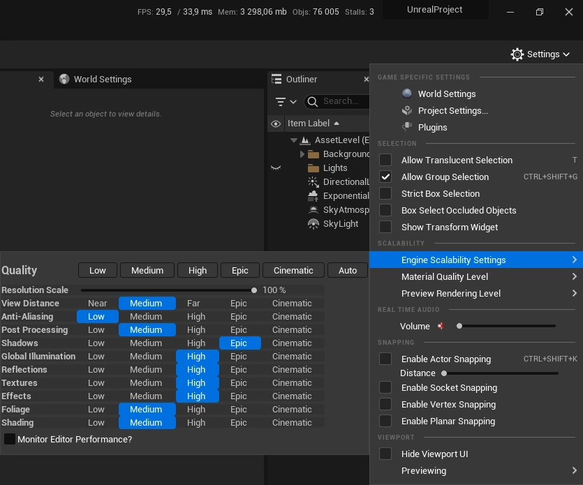
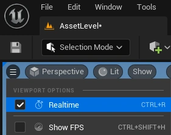
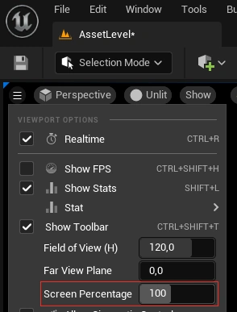
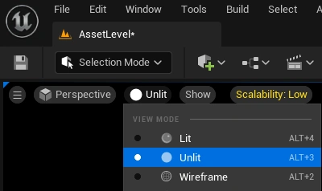
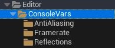
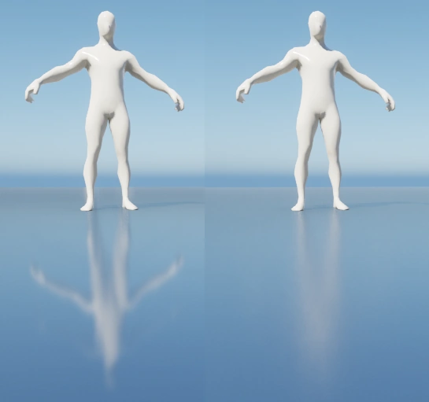
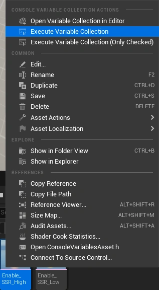

Performance tweaks
Scalability
You can tweak some of the generic quality settings under Settings > Engine Scalability Settings
In the picture below are some reasonable suggestions for the settings 
Note that:
- Setting Textures too low will use low quality filtering/mip LODs which will cause blurry textures at higher distances and certain angles
- Setting Shadows too low will cause bleeding between walls/solid objects and shadow banding. However reducing shadows yield good performance gains
- Setting Reflections/Effects to Medium or below can disable Screen Space Reflections
Viewport
Unchecking the Viewport options -> Realtime checkbox will stop unreal from rendering certain effects (such as the temporal component in TAA/TSR and reflections). Saves some performance, but causes some visual inconsistency compared to having it off.

Reducing the Screen Percentage slider to below 100% lowers the internal rendering resolution which can yield a significant performance boost. The viewport will become blurrier as the percentage is reduced. (If anti-aliasing is set to TSR, UE will reconstruct the lower resolution viewport to native resolution)

Switching View mode to Unlit/Wireframe will reduce the viewport rendering overhead. The Visibility Collision view mode is also more lightweight than Lit and in some cases provides better visuals than Unlit/Wireframe

Macros
There's a couple of macros for configuring console variables in Content/Editor/ConsoleVars.

- Framrate limits the amount of frames rendered each second. Unreal has no upper bound, which greatly impacts the GPU/CPU usage. Using a limit of 30/60 FPS is fine for working in the editor
- AntiAliasing controls the smoothness of geometry edges and shader aliasing.
FXAAwill use a simple post-processing edge detection algorithm. Works fine for static geometric edges, but will cause shimmering during movement and does not resolve shadow/ray-tracing noise.TAAwill use motion vectors and information across multiple frames which takes care of aliasing and shimmering, but causes ghosting during fast movements.TSRis similar to TXAA, but higher quality and also upscales/reconstructs the image to a higher resolution (noticable ifViewport options -> Screen Percentageis set to less than 100%)
- Reflections controls the Screen Space Reflections (also requires effects set to High in the Scalability settings). They are enabled by default, but the "High" macro also enables variable roughness for the reflections, but also introduces some noise (which anti-aliasing set to TAA/TSR should resolve) (without variable roughness, materials will have sharper reflections than their roughness value might suggest)
(Comparison of reflections low (left) and high (right). Note the constant roughness vs varying roughness difference)

To run a macro, right click and select Execute Variable Collection (double-clicking it will run it and then open the console variable editor)
